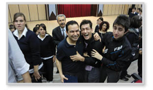

SONSÖZ
Mutluyuz, çünkü bizim küçük siyah beneklerimiz var…

Urfalı bir öğrencim, bir gün yaşadığı evin duvarının arkasında bir boşluk fark ediyor. Dedesi ve babası duvarı yıkıyorlar, ortaya bir mağara girişi çıkıyor. Giriyorlar mağaradan içeri, duvarlar tarih öncesi çağlardan resimlerle dolu. Mamutlar, avcılar, uzundişli kaplanlar… Hani şu Fransa’da turist akınına uğrayan mağaralardan.
Dede giriyor eve bir balyozla dönüyor, duvarlardaki resimleri kıra döke yok ediyor. Devlet evi istimlâk etmesin diye.
Soruyorlar ya, “Niye yapıyorsunuz bu projeyi?” diye. “Size mi kaldı? Bu işi yapanlar hep ücretli konferanslar veriyor, sizin ne işiniz var cezaevinde, çocuk esirgeme kurumlarında, ilkokullarda, üniversitelerde” diye…
İşte bunun için var proje. Başkaları yok etmesin binlerce yıllık tarihi diye.
Fatsa’ya gittim İbrahim karşıladı beni. “Hocam, asteğmendim. 2007’de 21 asker verdiler emrime 16’sı okuma yazma bilmiyordu” dedi.
Bunun için var proje.
Gençlerine 21. yüzyılda okuma yazma öğretemeyen ülkede bilginin değerini anlatmak için var. Bilmiyorum farkında mısınız, şimdi aklıma geldi.
Hep derler ya, cennet gibi ülke burası.
Evet, cennet gibi ülke de, içerisi şeytan dolu be arkadaş. İşini yapmayan, bürokrasi, siyaset, din, laiklik her ne ise bir şeyler arkasında saklanıp sadece ilişki yönetimiyle çıkar peşinde dolaşan şeytanla dolu bir cennet.
Böyle bir projenin içinde olmanın en zor yanı ne biliyor musunuz? Şirketi hayır cemiyeti sanan insanlar olmaya başlaması. Bursa Bölge Müdürlüğümüz bir konferans düzenlemiş; yılda bir ya da iki kez konferans düzenliyorlar. Akabinde Facebook’ta bir yazı: “Ne oldu insanlık, efendilik? Yakışıyor mu konferans verip para kazanmak.” Bölge Müdürü Zafer şokta, yazıyor adama: “Biz, vergi, kira, maaş veren, 42 kişinin çalıştığı bir eğitim şirketiyiz ve tüm gelirimizi eğitimlerden kazanıyoruz. Bize hiç ücretli etkinlik yapmadan maaşları nasıl ödeyebileceğimiz konusunda bir yol gösterir misiniz lütfen?” diye. Cevap: “Hani insanlık? Ayıp değil mi ücret almak konferanstan?”
Oysa Bursa’da sürüyle de ücretsiz konferans vermişiz. Vizgo.net diye bir sitemiz var ve piyasada 700-800 TL ödeyip ancak İstanbul’da katılabileceğiniz bir eğitimi oradan 10-80 TL aralığında satın alabiliyorsunuz. Süper bir hizmet, çok bir kârı yok.
“Ayıp değil mi ücret almak eğitimlerden!” 300 firma bu eğitimlerden para kazanıyor. Belki de bunu, bir proje sayesinde ihtiyacı olanlara ücretsiz ulaştıran tek kurumuz. Öte yandan para da kazanmak için işimizi yapıyoruz. “Yakışıyor mu size? Ayıp” diyen adamlar…
Yardım kuruluşu değiliz, emin olun.
Bize, işimizi niye ücretle yaptığımızı soran bu arkadaşlardan ricam, bize ödemelerimizi, maaşlarımızı nasıl ödeyeceğimizi yazmaları. Bir de manavlara, “Niye para alıyorsunuz meyveden?” fırınlara, “Ayıp değil mi ekmek için para istemeniz?” diye sormaları.
Cidden zor bir ülke, emin olun.
İzgören Akademi’nin telefonu çalıyor bir gün. Urfa’nın bir köyünden arıyorlar. Pelin’in proje lideri olduğu dönem.
Kızım bizim köye niye eğitime gelmediniz ki siz?
Amca sen kimsin?
Mehmet Amca ben.
Muhtar mısınız amca? Ya da köyün öğretmeni misiniz?
Yok kızım, köylüyüm, duydum ben sizi. Başka köye gelmişsiniz çocuklar çok sevinmişler, bizim köye de gelin.
Olur amca.
Uğur Böceklerimizden Merve gitti köye, eğitimlerini verdi gençlere. Ülkenizi sevin, dürüst olun, çalışın diye.
Aradan aylar geçiyor, İzgören Akademi’nin eski binasına, Kızılay’da Bulvar Palas’a bir koli geliyor. Açıyorlar içinden iki kilo fıstık çıkıyor, bir de mektup.
“Kızım siz köye geldiğinizde elde avuçta yoktu o ara hiçbir şeyimiz. Hiçbir şey veremedik. Ağacımızdan çıkan tüm fıstık bu, afiyetle yiyin, sağ olun, var olun.”
Kurum üniversitelerden, En İyi Eğitim Şirketi ödülleri aldı; başka ödüller de aldık, ama kurulduğumuzdan bu yana en büyük ödül, o iki koli fıstık oldu.
Bir gece bir otel odasında uyku tutmadı ve düşündüm. “47 yaşındayım, babamı, kız kardeşimi kaybettim, ne zaman gideceğim belli değil benim de. Yaradım mı bir halta acaba?” diye.
Sonra yüzüme kocaman bir gülümseme yerleşti, değerlendirme formuna “Arkadaşımın saçını bir daha çekmeyeceğim” diye yazan kedicik geldi.
“En azından bir ufaklığın saçını kurtardık” dedim.
Bizim alanımızdaki, İstanbul’daki, İngilizce isimli büyük yabancı yatırımlara buradan koca bir selam ediyorum ve diyorum ki: Eğitim verdiğiniz büyük şirketler, tröstler, cirolarınız, happy hour’larınız, jöleli toplantılarınız, yıllık büyük eğitim anlaşmalarınız size hayırlı olsun. Biz burada acayip mutluyuz, çünkü küçük siyah beneklerimiz var…
Ahmet Şerif İzgören
28 Şubat 2012
Gümüşhane